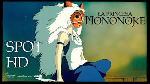

Es una película surcoreana de drama, suspense y humor negro del año 2019, dirigida por Bong Joon-ho y protagonizada por Song Kang-ho, Lee Sun-kyun, Cho Yeo-jeong, Choi Woo-shik y Park So-dam.
Ambientada en la moderna Corea del Sur, la acción oscila entre un abarrotado sótano compartido por una familia de cuatro miembros, que tienen mala suete y deben recurrir a la señasl de Wi-Fi de sus vecinos, y la glamorosa mansión en la que consiguen trabajar para una familia adinerada
Los espectadores se horrorixan y compadecen al mismo tiempo mientras los protagonistas alimentan la creencia de la madre adinerada de que su gijo es un genio del arte o está sometido al frío desprecio de su padre empresario. Por momentos violento , en otros tremendamente gracioso, el filme es difícil de definir, dijo Bong
Sen to Chihiro
Sen to Chihiro no Kamikakushi o en español La misteriosa desaparición de Sen y Chihiro, también conocida como el viaje de Chihiro es una película de animación japonesa de 2001 dirigida por Hayao Miyazaki y producida por Studio Ghibli. Se trata del séptimo largometraje dirigido por Miyazaki dentro del estudio y de la decimosegunda producción de Ghibli. Chihiro y sus padres se están mudando a otra ciudad, un hecho que la niña encuentra molesto al no estar de acuerdo con el cambio, y no duda en demostrarlo con su falta de ánimo y mal humor. Durante el trayecto, su padre decide tomar un atajo para ahorrar tiempo, pero solo consiguen internarse en un bosque y encontrarse frente a un estrecho y extraño túnel. Sus padres deciden bajar del coche para explorarlo. Chihiro se niega, pero sus padres insisten en hacerlo. Al otro lado del túnel, la familia descubre un pueblo aparentemente abandonado que su padre razona es uno de los tantos parques de atracciones que se inauguraron y quebraron rápidamente años atrás en Japón. La familia decide recorrer el lugar con la finalidad de encontrar a alguien. En su recorrido encuentran puestos al aire libre donde se detienen a comer; sin embargo, al no encontrar quien los atienda, deciden tomar los alimentos servidos sin permiso alguno, razonando que al tener dinero para pagar pueden hacerlo. Chihiro decide alejarse para continuar investigando y se encuentra con un misterioso joven llamado Haku, quien le alerta que debe llevarse a sus padres y huir de allí antes de que anochezca, lo que sucederá en pocos minutos.
Chihiro corre en busca de sus padres, aunque a medida que va oscureciendo la ciudad poco a poco va cobrando vida, los faroles se encienden y aparecen de la nada una gran variedad de espíritus. Al llegar al restaurante en el que había dejado a sus padres, Chihiro descubre que se han convertido en dos enormes cerdos
Princesa Mononoke

Princesa Mononoke es una creación de Hayao Miyazaki. Trata de la lucha entre los protectores del bosque y los humanos que necesitan de los recursos de este. El príncipe Ashitaka trata de salvar su aldea de un jabalí endemoniado y al hacer esto queda maldito. Por esta razón Ashitaka debe partir en busca de una cura y alejarse de su aldea para siempre. En su búsqueda conoce la aldea de hierro y a su líder Lady Eboshi, cuando esta aldea es atacada por una manada de lobos dirigida por una chica, la princesa Mononoke. Ahí descubre el porque de la lucha entre los protectores del bosque y los humanos que pretenden arrasar con los recursos naturales.
Con el fin de curar la herida que le ha causado un jabalí enloquecido, el joven Ashitaka sale en busca del dios Ciervo, pues sólo él puede liberarlo del sortilegio. A lo largo de su periplo descubre cómo los animales del bosque luchan contra hombres que están dispuestos a destruir la Naturaleza. En esta situación nos encontramos con el joven príncipe Ashitaka, que es malherido por una maldición. Sale de su pueblo en busca de la cura del mal que terminará con él. Llega a una aldea donde los lugareños combaten contra un espíritu del bosque que los atemoriza, y de una chica que monta dos enormes lobos blancos. A este pueblo también han llegado caza recompensas que persiguen hacerse con ese espíritu. Así, la película se convierte en una carrera por llegar antes al espíritu y tratar de cambiar el rumbo de los acontecimientos en distintas direcciones.
Umi ga Kikoeru
Puedo escuchar el mar es una película de animación japonesa producida por Studio Ghibli, lanzada en Japón el 5 de mayo de 1993. Fue la primera y única película del Studio Ghibli hecha para la televisión. Se trata de la única película de Studio Ghibli donde los grandes pilares de la compañía no han participado (Hayao Miyazaki e Isao Takahata), dejando libertad a las jóvenes promesas del estudio. La película fue dirigida por Tomomi Mochizuki y está basada en la novela homónima escrita por Saeko Himuro. Rikako Mutō es una estudiante de Tokio que acaba de ser trasferida a uno de los institutos de Kōchi, una ciudad costera alejada de la capital, tras el divorcio de sus padres. Rikako es una joven guapa, inteligente, buena en los estudios y en los deportes. Sin embargo, no consigue adaptarse a la vida social de la escuela. Al mismo instituto acuden Taku Morisaki y Yutaka Matsuno, dos grandes amigos desde la secundaria, el primero de los cuales empieza a fijarse visiblemente en la joven recién llegada.